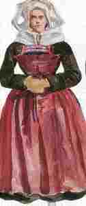
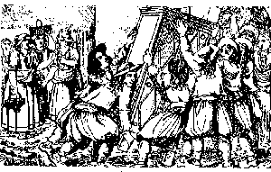

Son Fest an Arvel
Ton
1. Selaouit va douz intanvez Deuet on d'ho ti d'ober al lez. Breman eo digouet an amzer Da zilezel pe da ober.
2. -Er bloavez-man na zimezin, Na biken va c'haon na dorrin; D'ar govant eo red din moned, Lec'h on gant Doue gortozet.
3. -D'ar govant c'hwi ne yelo ket, D'am c'her-me ne lavaran ket; Ar rozen hag ar louzoù fin Zo mad da lakaad er jardin.
4. -Ar rozen zo mad d'ar jardin, D'ar vered ar wezen ivin. Kemeret am-eus da bried An Hini 'neus krouet ar bed.
5. -Dalit, dalit, va dousig koant; Dalit va gwalennig arc'hant! Lakit-hi war ho torn breman, Pe m'he lakai deoc'h va-unan!
6. -Biken gwalenn na gemerin Na biken d'am biz na lakin, Nemed gwalenn diouzh dorn Doue, Pehini e-deuz bet va feizh.
7. -C'hoant ho-peuz eta d'am lakaad D'am lakaad da vervel timad? - Den yaouang, me ho tigollo Diouzh ar pred kollet e va zro;
8. Diouzh ar pred ho-peuz c'hwi kollet, O c'hedal gwalenn en eured Me bedo Doue deiz ha noz Ma em gavim er baradoz!
.
Variantes tirées des carnets de collecte de La Villemarqué

AN INTAÑVEZP. 151. - Bonjour deoc'h, va dous intañvez! Deut on d'ho ti da ober lez, Da ober al lez a galon vad Giz reas gwechal ho mamm d'ho tad. 1bis. Setu me deut ur wech d'ho ti Da gweled pe a larfec'h din: Me zo denjentil, moarvat, Aour hag arc'hant war va dilhad. 1ter. Bonjour d'eoc'h va mestrez koant, Deuet on e(vit) goul ho santimant. Bremañ eo digouet an amzer Da zilezañ pe da ober. 2. - Gwell ve din kaoud liñserioù kanap: Bourev Kerhaes eo ho tad! Meus ket afer ho abusiñ Rak vit ar bloaz na zimezin; 2bis. Nag e't ar bloaz, nag e't daou, Ken na vo torret va c'haoñvoù. Ha pa vo va c'haoñv torret, D'ar govant m'eus laret moned, Da zeskiñ lenn hag ar galleg. |
2ter. Pell zo amzer e ven dimeet Anez gant aoñ na ven gwall dimeet Ven gwall dimeet d'ur gwall barti, Ha ne ven evit e lezel mui. 2quater. - Mar c'hwi 'peus aoñ euz gwall bried Va dousig koant, am kemerit! Biskoaz 'meus laret gwasoc'h tra Ged "Va dousig koant, Neketa?" 2quinquies. - Paotred yaouank war a larer Giz-se zo mat d'eus ar merc'hed, Ken vint a-benn d'e strafuilhañ Ha neuze e vint (kisedig?). 2sexies. M'am-eus laket em spered Me zo gant Doue gortozet. Mond d'ar govant ha lezel ar bed. 3. - Er govant, va mestrez, e viec'h. Groit-hi dimeuzon boud 'n abad Dindan ar vantel broderi Hag ar belleg d'hon eurejiñ! 4. Den yaouank, na zimesin ket d'eoc'h Me 'meus choazet da bried An Hini 'neus krouet ar bed. 5. - Dallit, dallit va dousig koant Dallit ho kwallenig arc'hant Lakit-hi war ho tornig bremañ En enor d'ar walenn promesañ. |
P. 16 6. - Biken gwalenn na gemerin Na biken war ma zorn na lakin, Nemed gwalennig deus dorn Doue, M'e gonduo ken en noz ha deiz. 6bis. Ni ne gousko ket daou memez gwelead Hogen ni gousko memez toullad. 7. N'ho-peus-hu ket soñj 'ta, mestrez, D'peus me karet hag alies? Den yaouank, m'ho rekompanso D'an amzer 'peus kollet war va dro. 8. Me pedo Doue, deiz ha noz Ma yefem hon daou d'ar baradoz O ya! Me a bedo Doue Ma yefem Hon daou dirazHañ Notice bibliographique- Collection Penguern t.90: "Mari" (Taulé 1850) (= M VII, 1894). - La nonne : Carnet de Keransquer N°2, p.186 Recueils: - Luzel, Gwerzioù 2: "Al Leanez" (Plouëc) - Guillerm, Chants du Pays de Cornouaille,"Al leanez" (Tregunc). Barzhaz Breizh: 1, 2, 3ème édition (page 427) |
